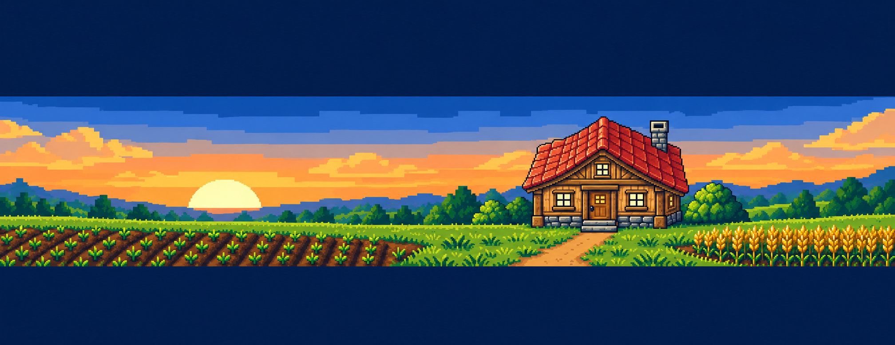
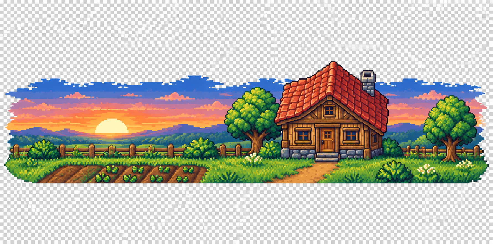
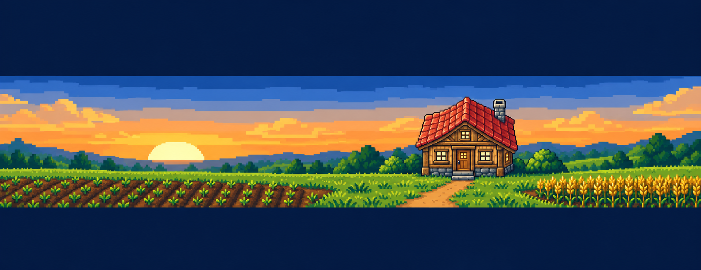
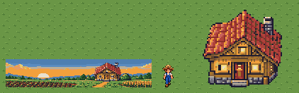
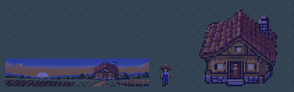
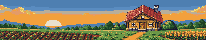
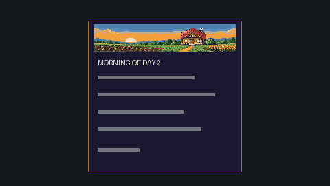
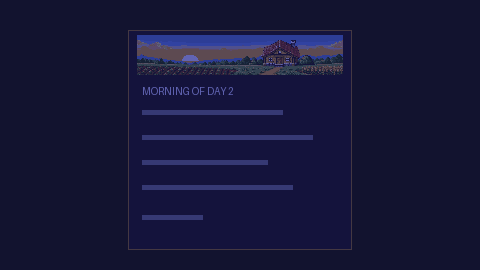

ImageGen source history and exact prompts

Exact prompt / Provenance

Exact prompt / Provenance

Exact prompt / Provenance

Exact prompt / Provenance
Native 1x equals 4 screen pixels at FHD. Runtime not integrated. World relight is reference only for UI: HUD is not relit.
Contract / Checks / Review log
Known incomplete checks: none
1frames / 1s / static or one-shot
Native 1x / FHD 4x / night 4x / light / dark / checker / grass
Ground line: new sprite / farmer / nearest existing reference



Native1x / FHD4x / world relight reference4x




